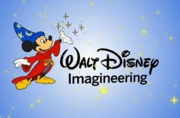

HTML Examples
Lauren Roberts
Web Design
Last year I decided to take Mrs. Mulhlauser's Multimedia 1 class and I absolutly loved it. I learned about different properties in Photoshop, Illustartor, and also HTML coding. Out of all the things thatI learned about last year coding was the hardest principel for me to understand. When I found out that Mrs. Mulhlauser also taught a Web Design class I didn't hesitate to sign up.The reason for me taking Web Deisng is so I could learn more about coding and improve my skills. In terms of coding I also want to be able to create my very own website. I know that I am going to have another sucesful year with Mrs. Mulhlauser and I am looking forward to all fun!

Coding Skills for Future use
Having different code skills is going to come in handy in my future. For example, I can currently a senior and am working on the college application process. One of the requirments that I need to to create a portfolio when applying to different design schools. With that being said, based on the HTML coding skills I have learned last year, and will continue to learn this year, I can use those skills by making a online portfolio from scratch. In addition I can use my coding skills as a hobby by making websited for fun. I can even use these skills to make a little extra cash. An example would be working on updating the schools website, or even help some techers create their very own.
My Future Career
My whole entire life I have wanted to become a Walt Disney Imagineer,but considering that WDI has over 50 different occupations it has been difficlut trying to figure out what exactly is it that I want to do. It wasn't until I started high school that I made that discovery. Through out high school I have been apart of the Visual and Performing Arts Pathway. Some of the courses that I have taken include are Art1/Design, Graphic Design 1 and 2, Multimedia, and currently Internet Publishing. With that being said I am considering to major in Graphic and Web Design. One of the schools that I am considering to apply to is The Art Center in Pasadena,CA. The school had a great Graphic/ WEb Design program and even allows student to apply for internships; such as Walt Disney Imagineering! 